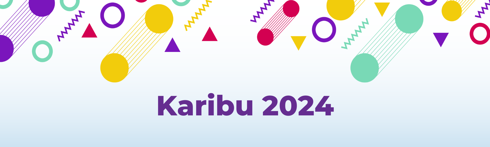

dominico.online
Habari, huu ni ukurasa rasmi wa parokia ya mtakatifu Dominico Guzman. Tumia dirisha hili kupitia matangazo ya kila jumapili.
Nyumbani
(current)
Tovuti Kuu
Omba Sakramenti
Matangazo ya Jumapili
Je, unafahamu yanayojiri katika parokia yako?
Rudi tovuti kuu
Matangazo ya Ndoa
Imechapishwa tar 9
Lucy na Liberati washangazi wanatangaza ndoa kwa mara ya saba
Soma Zaidi →
Ripoti ya matoleo
Imechapishwa tarehe 9
Jumapili iliyopita tulikusanya sadaka jumla milion kumi na nusu.
Soma Zaidi →
Zamu Za Usafi
Imechapishwa tarehe 9
Dominika ijayo usafi utafanywa na viwawa
Soma zaidi →
Kuapishwa viongozi
Imechapishwa tarehe 9
Dominiko ijayo tutaapisha viongozi buku kutoka ngazi zote za uongozi wa kanisa
Soma Zaidi →
Previous
Rudi Tovuti Kuu
#Heri ya Mwaka Mpya 2024
Tunawatakia heri na fanaka za sikuu na nyie pipa
